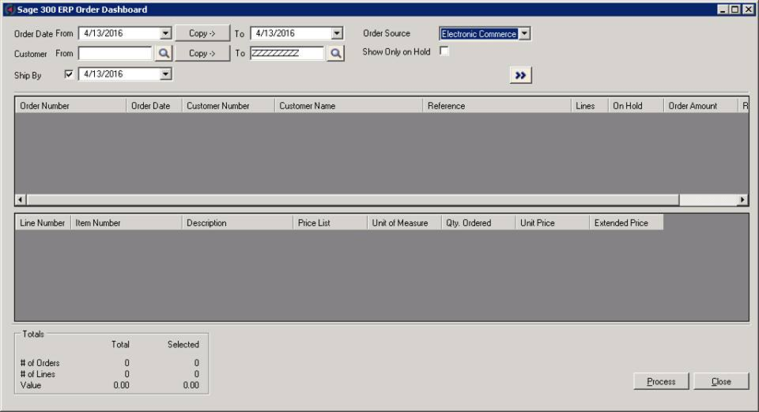
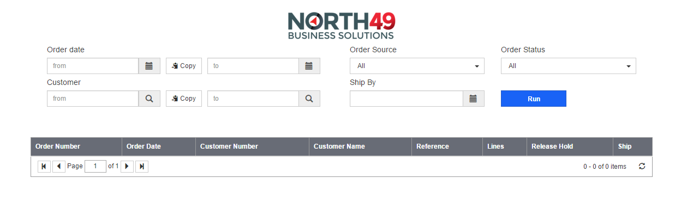

Company: North49 Business Solutions
Presenters: Aaron Liu & Thanh Lai
April 14, 2016

Displaying an overview of orders which meet specific search criteria and providing several custom actions for the selected orders.
To convert the current Order Control desktop application to the web-based application

Thank you.